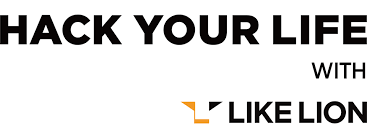

LIKE LioN

Program your LIFE.
Change your life with programming.
Let me introduce the LIkelion Orgarnization, Our crew and living.
- We are LIke LIon!
- We work like a lion as..
- We can help you like a lion as...
- We are looking for someone like a lion as...
We can Help You like a Lion as...
Insight Day [once a month]
It's officially time for something else!
Let's explore new things with various cool signs. Get Insights, or...
Get an in-site or both!
Support for meals [10,000 won per day]
Keep your personal card! We'll buy lunch or dinner, one meal a day, an hour for you, and a meal time. You can eat a little late when you're busy,
or you can eat a little early when you are hungry.
Job item presentation
Now, let's go hunting! We'll give you the equipment you need to hunt.
※ Laptop, monitor, mouse/keyboard, and multi-port are provided.
Book Purchase Support [Unlimited]
If you need a book for your growth, we fully support it. It hurts to say it twice, but there is no limit to this either.
Talent recommendation system [1 million won]
If you have a good talent, please recommend it for a new recruitment position. There's a lot of good people around people like you, but only for
experienced employees.
Delivering a content platforms
Talk more about growth with your team members. It supports various content platforms from publishing to outstanding.
Proceeding with an English class
Twice a week, English classes by level are held in the office during the day. Don't go to the academy outside the company after work to learn English,
which is an essential language in the global era.
Insight Day
Once a month, leave the company and discover a new Insight, so you can communicate with other headquarters/team.
Have a great time with our
leader, HACK INSIDER, who worked hard for Insight!
Pride Meeting
Like a fashionable lion who recommends a transparent conversation based on psychological stability, we hold a Pride meeting every month to discuss
our Pride freely in Lapiki, on the third floor of Space: Serengeti.
Wanna know more about us? Come Here!
- BI Guidline
- LikeLion from press
- Donation Result